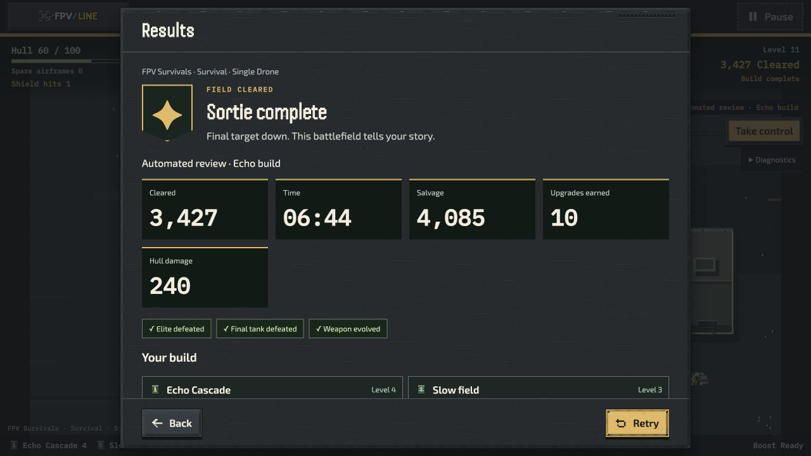
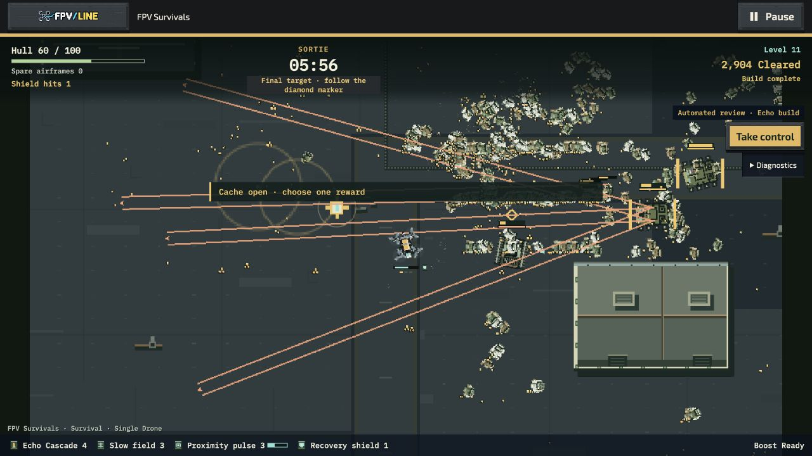

Runtime cf16eea20 · Single Drone · Receiver Gardens · seed 202604 · Standard ·
three Scout airframes · Echo / figure-eight · ordinary crowd rule.
New sorties keep the first eight upgrade thresholds and bring the last two closer. Existing authored projects retain their rules. These native recordings use earned upgrades and the ordinary review pilot; they are separate from performance trials.
Starts around 3:57, as the tenth earned upgrade arrives.
Starts around 4:59. This is a sequential sample from the same run, not an identical-event audio comparison.
Starts around 5:33.
Shared Signal Afterglow synth music; master 0.65, music 0.55, effects 0.70. Battlefield recorder excludes HUD, cards and external soundtrack files. Captured audio is non-silent; listening quality and warning audibility require review. Recording invalidates this sortie for timing qualification.
3,427 cleared · all ten upgrades · two airframes lost. Exact statistics and upgrade ticks match the paired simulation.

